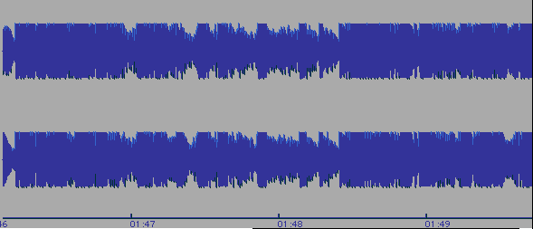
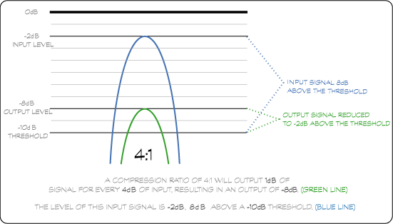
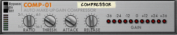

Topics:
In audio production, dynamics means loudness. When we change the level of a track in a mixer, we’re adjusting dynamics. In that sense, basic automation is a kind of dynamics processing. Dynamics processors are specialized kinds of tools that respond automatically to level changes in an audio signal. They’re designed to manipulate the dynamic range of a signal.
Dynamic range is the difference between the loudest and the softest part of a musical performance or signal. Although musicians and composers use dynamics as a basic expressive element in music, this sometimes presents challenges in making a good recording.
Let’s consider the following example: It’s a fine, sunny day and you’re taking a spin in your convertible. A Beethoven symphony is in your CD player. How well does classical music work as driving music?
Composers of concert music use dynamics to build tension and release in music. In quiet sections of the music, you’ll have to turn up the volume on your car stereo, only to scramble to turn down it down when the entire orchestra kicks in at full volume. You’re using the volume knob on your stereo to control dynamic range. After a few minutes of this, you’ll probably wish there was some way to do this automatically. There is! It’s called a compressor.
A good symphonic recording should capture the dynamic range of the performance. Remember that the composer wrote the music to be presented in the listening environment of a concert hall, not a convertible. Most popular music is meant for a variety of listening environments, and as such, dramatic shifts in dynamic range are avoided.
Compare the waveform views of two recordings. Which one do you think would make better driving music?
Beethoven, Symphony #4 in B Flat Major, Adagio. This recording exhibits a wide dynamic range. Notice how the quiet section at the beginning builds to to a climax at full volume.

Chemical Brothers, "Block Rockin' Beats." This recording has little or no dynamic range. It's always as loud as possible.
Compression is used to reduce the dynamic range of a signal. We generally use compression to accomplish one of two goals:
Take a look at the figure below. It’s a waveform display of a two-measure drum part. You’ll notice that there’s a big difference between the highest and lowest peaks of the waveforms, that there’s a wide dynamic range. Listen to the example file and you’ll hear that the highest peaks represent kick drum and side stick snare sounds that provide accents. The lower peaks show the more delicate brushwork on the snare.
Drums with no compression
Click to Play Drum Example
In the figure below we see the same drum track compressed. Notice that the visually the difference between the lowest and highest peaks is less, indicating that the accompanying example file has less dynamic range. The result is that the brushwork is apparently louder in context with the kick and snare. This will help to better define the overall rhythmic feel of the finished mix.
Drums with compression
Although there is some variation between different models of hardware and software devices, these are the basic parameters you'll find on most dynamics processors. Understanding how these work will help you use any of those devices.
When we use a dynamics processor, it will be applied directly in the path of a signal. In a mix, we'll use it as a channel insert effect.
A compressor will reduce the level of a signal when it reaches a certain threshold. The threshold parameter on any dynamics processor determines when the device becomes active.
Once a signal has reached the threshold it can be processed in a variety of ways that are largely determined by the ratio setting. The ratio determines by how much a signal level is reduced by the process. A 2:1 ratio means that once a signal goes above the threshold, it's reduced by one-half. In other words, a signal that exceeds the threshold by 2 dB will be reduced by 1 dB. A signal that exceeds the threshold by 8 dB will be reduced by 4 dB. As we set the ratio higher, we get a greater reduction. A 4:1 ratio would work as follows. As a signal that exceeds the threshold by 8 dB, it will be reduced by 6 dB to one-quarter its original level as shown in the diagram below:

Amplitude reduction with a 4:1 compression ratio
Since one of the goals in compression is to make a signal louder, we can amplify the level of the final processed output using a control called make-up gain.
Ideally, dynamics processing should sound natural. We shouldn't be able to notice, especially in acoustic recordings, that the sound is being processed. We might notice some dramatic changes in level that could be distracting if the threshold setting functioned as a switch, turning processing on and off. For this reason, a dynamics processor will usually have settings for the attack time and release time. The attack time determines the amount of time it will take for the effect to become active. The release time determines how long it will take for a signal to be restored to an unaffected state. In general, we'll use shorter attack times if we want to reduce the very start of a sound, such as the percussive hit of a drum. We'll use longer release times if we want to gradually restore a signal to its original level.
Lets take a look at the compressor found in Reason and identify the controls we just mentioned.

There are four different kinds of dynamics processing. The difference between these is in how the basic parameters we've just looked at function.
Limiting is a form of dynamics processing that prevents a signal from going past a threshold. We can think of it as extreme compression. We'll take a look at the graphic display in the Logic Compressor to see how this works.
In the compression exercise, we explored some basic ideas behind reducing the dynamic range of a signal.Take a minute to review what we've learned.
Generally, limiting is used when we make audio recordings. As we saw when we discussed digital audio, we need to avoid exceeding a maximum level when recording digitally. A limiter is very useful in preventing unexpected peaks in a signal from going over a threshold and ruining a recording. In addition to software plug-ins that we can use in our virtual channel strip, we'll often find limiters in microphone pre-amps. Many of you have probably used a limiter when using video or MiniDisk recorders.
Gating is a type of dynamics processing that prevents signals below a certain level from passing.
We've just seen that the difference between compression and limiting is in how we set the compression ratio. When we gate a signal, we're in a sense limiting a signal. But, instead not allowing a signal to exceed a threshold, a gate will only pass signals that are above the threshold. This is commonly used to eliminate background noise from a track.
Some Things to Think AboutNoise gates were developed long before automated mix consoles and hard-disk recording, and were used to clean up analog recordings during mixing. These days, we can solve the kind of problem we just encountered by either automating track mutes and levels, or by editing the file to remove the unwanted sound. In modern production, gates are often used to trigger special effects, like the famous Phil Collins gated snare and tom-tom sounds that defined drums sounds in the 1980s.
In setting up dynamics processors we've seen that different instruments will have their own unique loudness contour, or envelope, that we need to take into consideration when making these settings. What we've learned here will ultimately help us when we start using synthesis tools to make our own electronic instruments.
{kind=link}